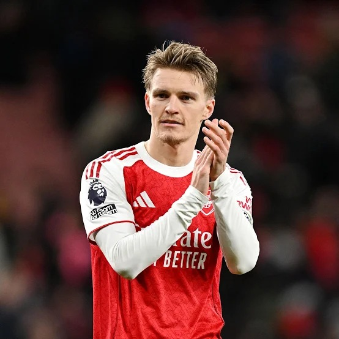

Most Popular Arsenal Players 2026

Bukayo Saka is a talented winger known for his pace and dribbling skills.
Gabriel Martinelli is a dynamic forward with a keen eye for goal.

Martin Ødegaard is a creative midfielder known for his vision and passing ability.
William Saliba is a strong and composed central defender.